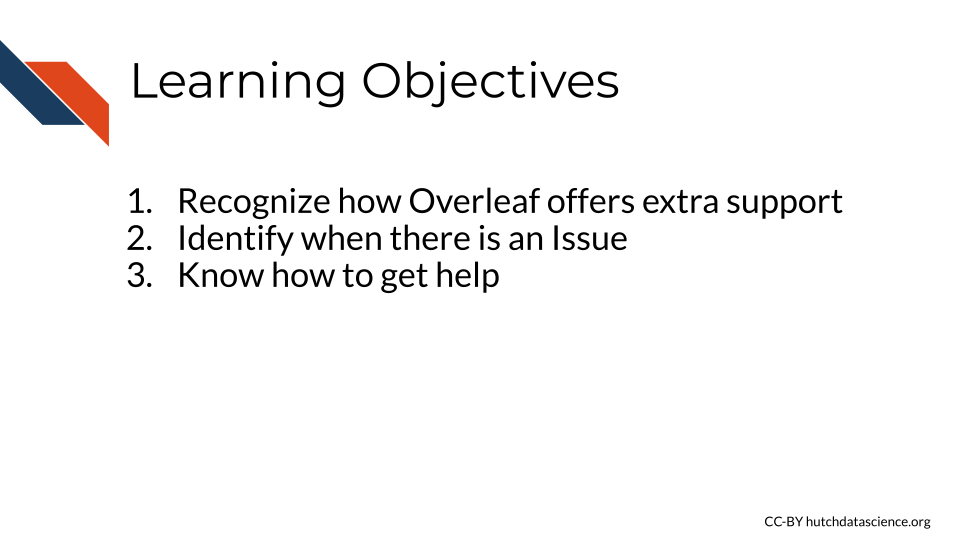
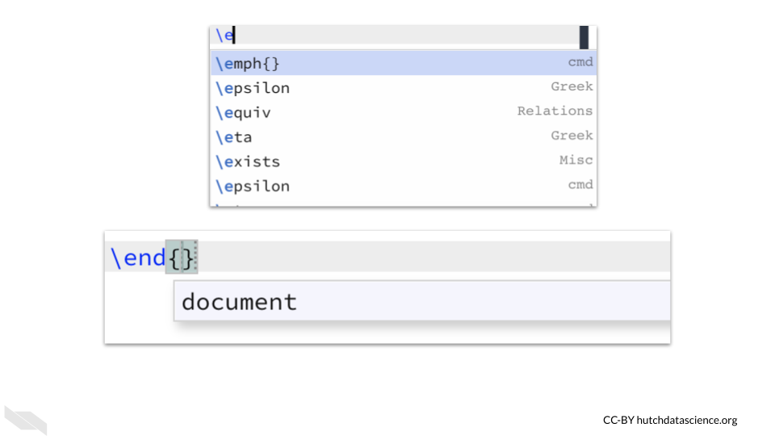
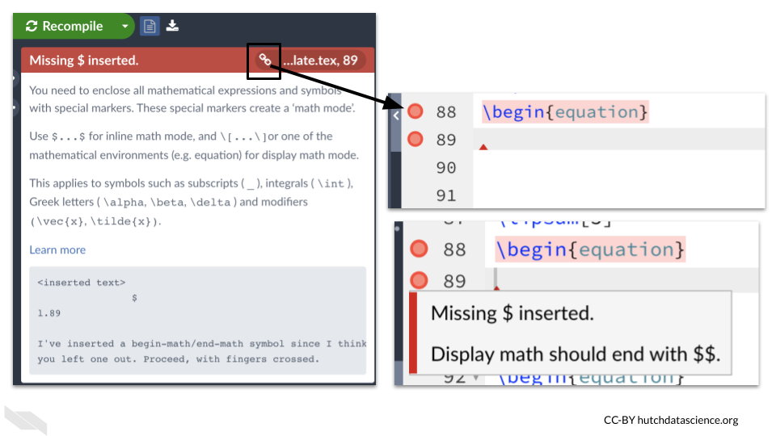

Chapter 6 Troubleshooting
Overleaf has lots of ways to make writing in LaTeX easier. In this chapter we will cover several of these ways, as well as how to identify and fix a problem if you encounter one.
## Auto-refreshing stale OAuth token.## Warning in pptx_notes(pptx_file): Slides with no notes exists
6.1 Code Suggestions
As you type code, Overleaf makes code suggestions based on what you have already typed. You can click on a suggestion to use it. Overleaf will also offer suggestions on what to put within command brackets. This can be great if you can’t quite remember what a command is or if you are trying to write a document faster.
## Warning in pptx_notes(pptx_file): Slides with no notes exists
6.2 Symbol Palette
If you need to use many symbols or mathematical notations in your work, the symbol palette can be very helpful. You can access it by pressing the button that looks like an omega symbol at the top of the source editor.
## Warning in pptx_notes(pptx_file): Slides with no notes exists
6.3 History
If you change something and want to see what it was like previously, you can checkout the History tab.
Here you will see the most recent changes as slices of changes overtime. Changes will be highlighted in a color that coordinates with specific users. So if you have collaborators you can see their changes here as well.
If you are using the comparison mode you will see the changes and who made them. However, you can also just look at the files from a specific point in time without seeing changes by clicking on the “view single version” button.
## Warning in pptx_notes(pptx_file): Slides with no notes exists
For more information about using the history features of Overleaf, see this documentation “Using the History Feature” (n.d.).
6.4 Log
If you check the log by clicking on the button to the right of the recompile button, you will see messages about any warnings or errors.
The link button at the top of each message will take you to the line of the file that is problematic.
Hovering on the red circle right next to the line number will show you information about what might be wrong with that line.
## Warning in pptx_notes(pptx_file): Slides with no notes exists
6.5 Trouble Compiling
Occasionally, you will not be able to compile your document and will get an error.
When this happens, look for yellow triangles or red circles in your source code to determine what might have gone wrong.
Remember if you hover over them, they will give you helpful messages.
Keep in mind that sometimes an error happens earlier than where a red circle is indicated.
Here is an example of brackets that were not closed on line 76 where the yellow triangle is, but the red circle shows up on the next line because Overleaf expects you to close it here.
## Warning in pptx_notes(pptx_file): Slides with no notes exists
Remember, it is a good idea to press the “Recompile” button frequently, so that you can identify any errors more easily. If you wait too long to check, then you will have more new changes to look through to try to understand the error.
6.6 Getting Help
There are many useful resources if you get stuck:
- The Overleaf documentation has lots of helpful information: https://www.overleaf.com/learn These pages are especially useful:
- The TeX stackexchange: https://tex.stackexchange.com/
- TeX blog: https://texblog.org/tex-resources/
- LaTeX project: https://www.latex-project.org/help/documentation/
If you are submitting a paper to arXiv these resources may also be helpful:
6.7 Conclusion
We hope that this chapter has given you some guidance about how to make it easier to write your documents, identify errors, and find help.
Here are some of the major take-home messages:
- Overleaf offers helpful code suggestions to make writing easier.
- Overleaf has a symbol palette to help you write with symbols. This can be accessed by pressing the symbol button, which looks like an omega, at the top menu.
- You can see changes and previous versions of a document under the history tab. This also shows you who made those changes.
- The log can give you more information about any errors or potential issues with your document. Each message in the log has a link to take you to the potentially problematic line of code.
- Triangles and circles in the left side of the source editor can indicate issues. If you hover over them, more information will pop up about what the problem might be.
- Keep in mind that sometimes an error or issue is due to something earlier in the code.
- If you run into an issue, there are lots of resources to help you!